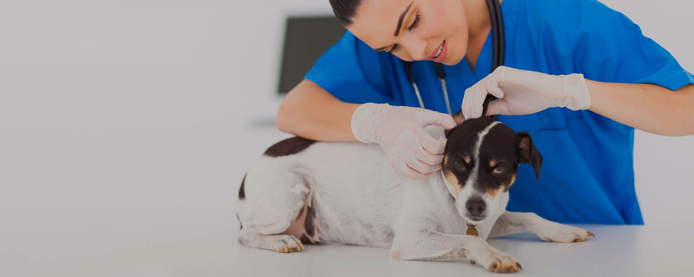

GOVETKU
Sistema de gestión de Veterinarias
GOVETKU es un software para médicos y clínicas
que tiene
en cuenta necesidades de un centro de medicina veterinaria
siendo
capaz de registrar los dde los clientes y de sus mascotas o
animales
para gestionar tareas administrativas salud
simultáneamente.
- 